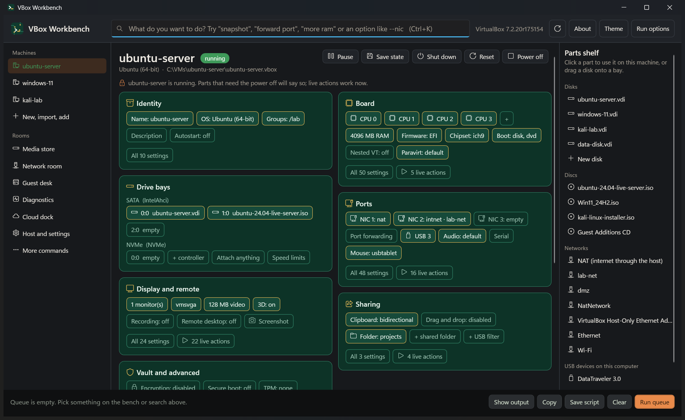
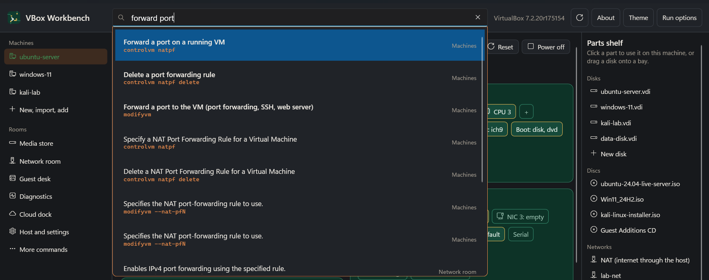
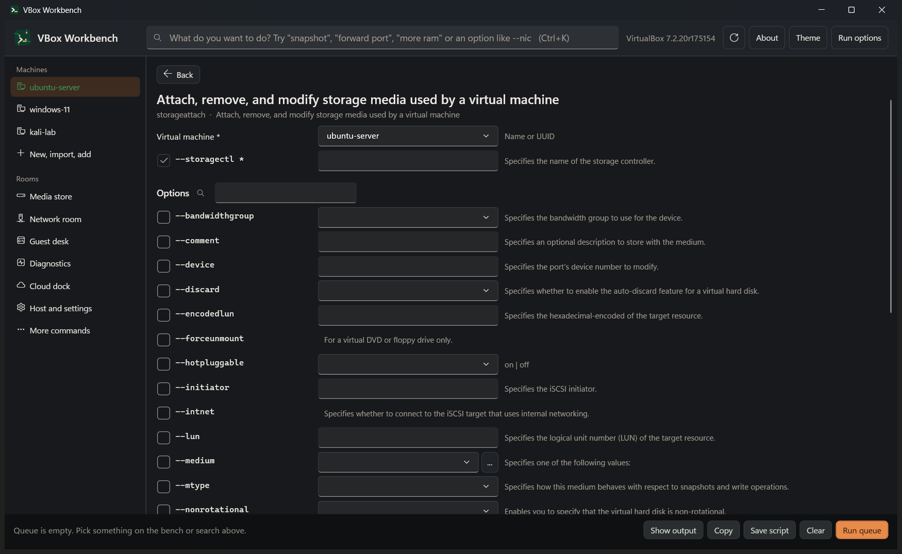
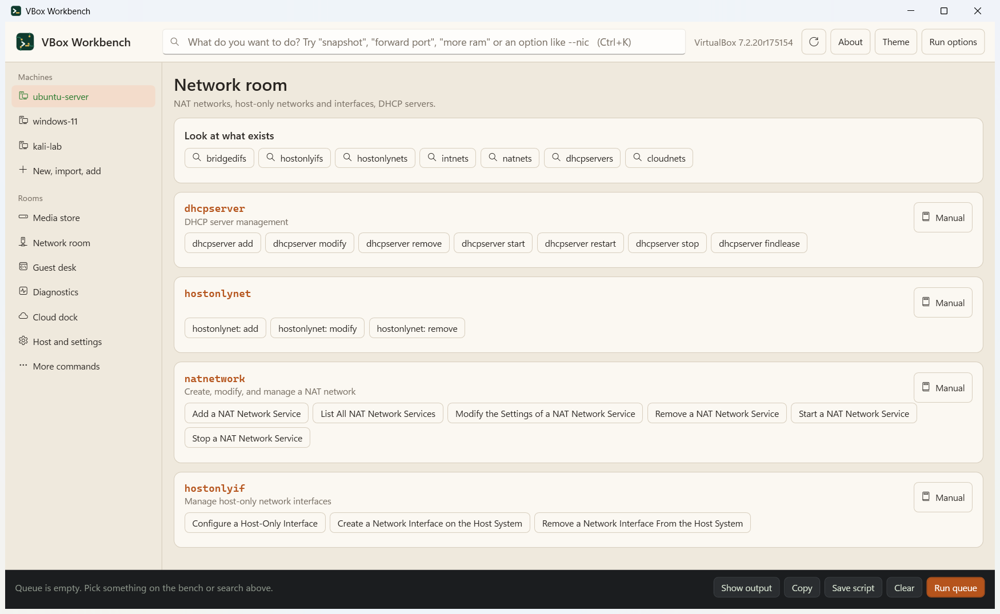
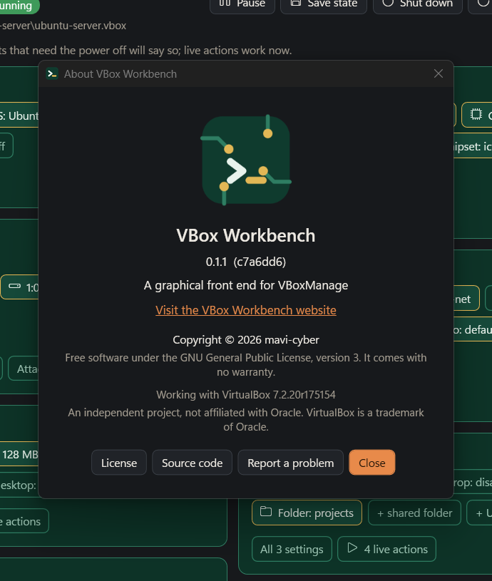

VBoxManage,
without the typing.
Open a virtual machine like a PC on a workbench. Click parts onto it, and VBox Workbench writes and runs the VirtualBox commands for you.
This is a toy. Nothing runs in your browser. The real app does this for every VBoxManage command and option.
How it works
Three steps, and the command line is always visible so you learn it as you go.
Say what you want
Type "forward port", "more ram" or an option like --nic in the search bar, or click a part on the board.
Fill in the blanks
Every action has a form with one field per option, a plain description, and the exact command line updating live.
Run, copy or save
Queue several commands and run them in order, copy them, or save them as a script. Destructive commands ask first.
Screenshots
The workbench shows one machine as a circuit board. Chips are settings; dashed sockets are empty slots.










It follows your VirtualBox version
The app ships no fixed list of commands. It asks the VirtualBox you have installed what it can do, and builds every form from the answer. When VirtualBox adds or renames something, it appears after the update.
Your VBoxManage
Its own usage lines and help text are read on first start.
Catalog
Commands, actions and options, cached per VirtualBox version.
Forms, board, search
Everything you see is generated from that catalog.
VirtualBox 7.x is read directly. 6.x and older print a different layout with no descriptions; the app reads that too and borrows the explanations from a newer manual.
What is in it
Everything the VBoxManage chapter of the VirtualBox manual covers has a place.
Workbench
Identity, board, drive bays, ports, display, sharing and vault zones, with power buttons and a snapshot timeline.
Parts shelf
Your disks, ISOs, networks and USB devices. Click one to use it on the machine.
Rooms
New and import, media store, network room, guest desk, diagnostics, cloud dock, host settings.
Search
Plain-language phrases plus every command and option your version has.
Queue and scripts
Run in order and stop on the first failure, or save as .cmd, .ps1 or .sh.
Guard rails
Commands that delete or cannot be undone ask before they run.
Themes
Light, dark, or follow Windows.
Open source
GPL-3.0. Read it, change it, build it yourself.
Download
For 64-bit Windows with VirtualBox installed. A single file, no installer.
| File | Size | Needs |
|---|---|---|
VBoxWorkbench-<version>-win-x64.exe | about 65 MB | Nothing. Pick this one if unsure. |
VBoxWorkbench-<version>-win-x64-needs-dotnet.exe | under 1 MB | The .NET 10 Desktop Runtime |
SHA256SUMS.txt | Checksums for both files |
Check a download against SHA256SUMS.txt in PowerShell:
Get-FileHash .\VBoxWorkbench-0.1.2-win-x64.exe -Algorithm SHA256
The files are not code-signed, so Windows SmartScreen may show an "unknown publisher" warning on first run. This is an early release: try it first on a virtual machine you do not mind changing.